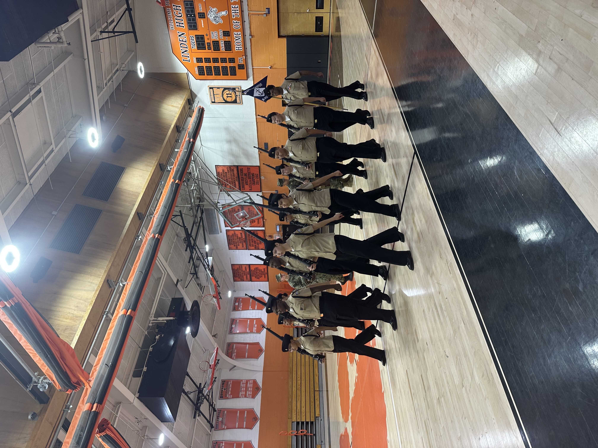
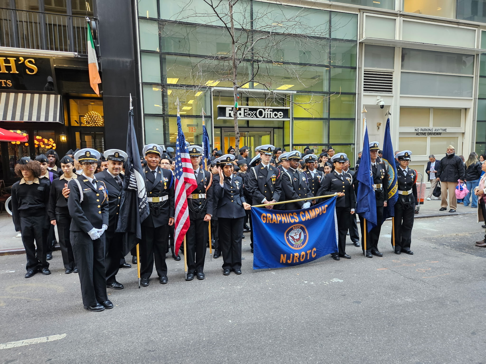
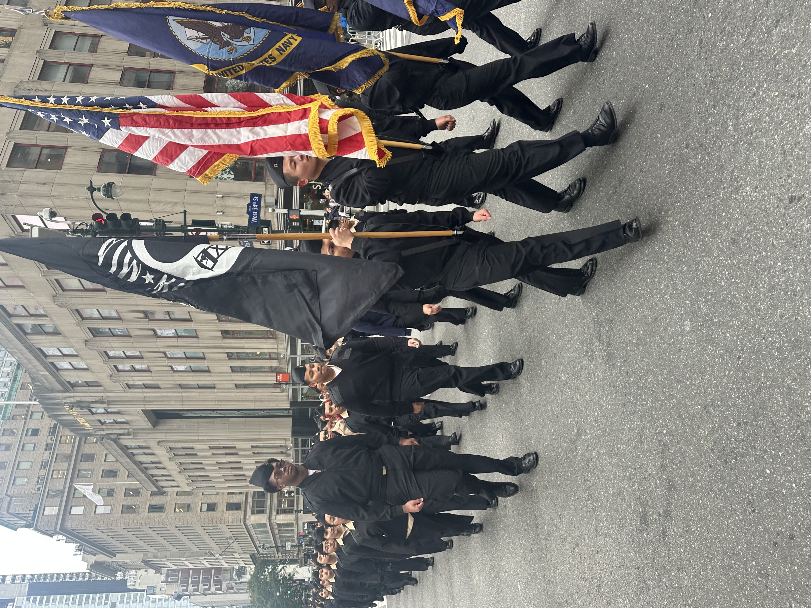

My Education and Personal Growth
Education has always been an important part of my journey. As I got older, I began to understand that learning doesn’t stop when you graduate from school. Life itself is an education, and every experience teaches you something new.
My educational journey has taken different paths. After serving 20 years in the United States Navy, I continued pursuing my education while also working with young people as an NJROTC instructor. Returning to college as an adult has given me a different appreciation for education. I bring years of life experience, leadership, and discipline into the classroom. Being a college student while balancing work, family, and personal responsibilities is challenging, but I believe it is never too late to learn or accomplish something new. NJROTC Unit

